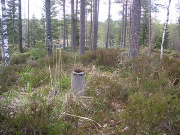
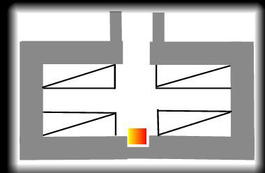
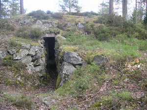

Skyddsrum 206
|  |  | |
|  |
Samtliga skyddsrum i skansen är av Typ 12, d v s de hade plats för 12 liggande eller 24 sittande. Skyddsrum 202 hade dock plats för 24 resp 48 personer Skyddsrummen ansågs vara fullträffskyddade, d v s de skulle kunna motstå en direktträff av en 50 kg flygbomb eller en 15 cm artillerigranat. Uppvärmningen skedde med en liten gjutjärnskamin. En sådan finns bevarad i Skyddsrum 202 (befälsbunker). |